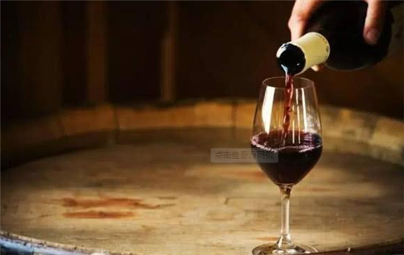

一、品酒的酒杯
酒杯对于葡萄酒的影响是不可忽视的。选择什么类型的酒杯,这是品尝葡萄酒时最重要的一个环节。同一瓶葡萄酒,倒进不同形状的酒杯中,闻到的香气也会有所不同。它的风味会随着杯子的形状而产生不同风格的
表现。酒杯的直径,杯体的长度,杯口的宽度甚至杯壁的厚度,都会对葡萄酒的风味产生微妙的影响。
1.宽身窄口的杯子,特别容易凝聚香气,让葡萄酒表现出非常奔放的酒香来。波尔多红酒杯,杯身较长,杯口较窄,酒的味道聚集于杯口。
2,窄身窄口的设计,是为了让酒的香气不特别外放,可以表现出更多的细微变化。勃艮第红酒杯,杯身较矮,杯肚较宽,杯口较大,适合把身子放进去闻香。

二、酒类的品尝知识
(一）味觉的基本概念：
舌头的表面有乳头,乳头有味蕾,味蕾是由数个味细胞成营状聚集起来。味蕾主要存在于舌头和舌缘的叶状乳头中和舌根部呈V字形的有廊乳头中。舌尖部分和两侧最敏感舌的中部比较迟钝,因为味背在舌头的各部分上分布的密度不同。
舌尖部分对甜味最敏感,舌周边及中央对酸味最敏感,舌尖到舌两侧之间对威味最敏感,舌根部分对苦味敏感,辣味是舌面及口腔粘膜受到刺激产生痛觉,涩味主要是口腔粘膜感受。
品酒如品茶,只怀风月,不识经道,就如耕牛饮渠。
品酒并不是喝酒,品酒是一门学间。譬如欣赏一幅画、听一首音乐,如果你没有美术和音乐的修养,就不可能说出他的好坏。品酒并不是大师们的专利,掌握它，你将真正享受到酒的美妙。
就好似温存前要调情一番,品酒前也必有几个动作不可略。目的都是为了效果更撩人心弦，让人偷悦。通常品尝葡萄酒的方法不外乎视觉、嗅觉及味觉的观察，与品茶有异曲同工之理。
醒酒
拔起瓶塞后,有些葡萄酒如花朵般绽开,以马上享用。但年纪太轻或单宁过硬的酒,时便需要醒酒过程打开它沉睡的心。沉淀物1多的陈年老酒,可以用换瓶的方式处理。但时间不能太长,以免酒香尽失。(三)酒温
葡萄酒的温度非常重要。一般品尝白葡萄酒的温度在10-16摄氏度之间,红葡萄酒的温
度比白酒要稍高一点。而甜酒的温度则可以更低,气泡酒通常介于7-9摄氏度间。但年份香槟例外，不能在低温下品尝,它细致的风味将被困住无法释放出来。
（四)持杯
选定酒杯倒进葡萄酒后,如何持杯呢?别以为用手捧着丰满的杯肚最隐当,因为手掌的温度会令杯中的酒开始升温。而应该尝试用大拇指和食指、中指捏住杯座。如果不习惯,也可以在杯肚和杯底中间细长处，找个舒服合适的拿法即可。（五）观色
白酒有淡黄绿、稻草黄、金黄、金、暗金、马德拉酒色和棕色;红酒有紫、红宝石、药砖红、红棕、棕色。
（六）摇杯
酒在手中以后,为了增加酒与空气的接触面,充分散发它的香味,我们应该摇晃手中的酒杯,以与桌面平行的圈状旋转为原则。至于应该时针还是逆时针，端看个人喜好习惯而定。摇杯后的葡萄酒会在酒杯的嘴留下一条条酒痕来,越密、越粗、越长、越持久,就代表酒含有酒精、甘油或是糖分,葡萄酒就越浓越甜美。
（七）闻香
闻香时,专业人士一般喜欢分两三次来进行香气分析。第一次先状态的酒，应该是向到的气味很谈，因为只闻到了扩散性最强的语气、因出，第一长向备的结果不能作为评价葡萄酒香气的主要欲镜后见动酒杯,促使酒与空气中的氧接触，让酒的香味物质释放出来,再行第二次闸香。这次闻到的香味应该是比较丰富、浓郁、复杂。
如果说第二次闻香所闻到的是使人舒适的香气的话,第三次闻香则主要用于鉴别香气中的缺陷。这次闻香前,先使劲摇动酒杯,使葡萄酒剧烈转动。这样可加强葡萄酒中使人不愉快的气味，如醋酸乙酯、氧化、霉味苯乙烯、硫化氢等气味的释放。
(八)入口
入口不要马上吞下，而是要味觉感受葡萄酒中的味道,酸甜苦涩不一而足。先将酒含在口中，做咀嚼吸气动作,反覆于口腔中进行搅动，记得它布满您口腔四周,舌头两侧、舌背、舌尖，并延伸到喉头底部。好让香味散发到整个口
腔中。经过以上的动作后,就可以喝下葡萄酒。但品尝并未结束,因为葡萄酒留下来的余香具有持久性,这就是余韵。
职业试酒师品评酒时，往往咽下少量酒，将其余部分吐出。然后,1舌头牙齿和口腔内表面，以鉴别余味。一般用时间(以秒为单位)来算余味持续的长短。在结束第一个酒样后,应停留一段时间。只有当远酒样引起的所有感觉消失后,再品尝下一个酒样。
其实,品酒的规矩不是一个定式。每个爱酒的人(酒徒除外)都套独到的品酒经。只要你爱酒,你就会为遇到好酒的那一刻去费思量在完成上述步骤后,应记录所感觉到的气味的种类、持续性和浓度
并通过酒香来鉴别酒的结构和协调程度,即酒的味道、酒精以及酸度之间的关系。
三、辨识红酒
“一串葡萄是美丽,静止与纯洁的,但它只是水果而已:一但压榨后,它就变成了一种动物,因为它变成酒以后,就有了动物的生命。一威廉·杨格
迷人的色彩,神秘的情思,柔和醇香的红酒饱含了鲜活的生命原汁,蕴藏了深厚的历史内涵。曾几何时红酒在国内造成一股新的饮酒文化,在市场上到处可见红酒的踪迹,而一般人对红酒的了解、认知并不多,而往往饮用红酒是采取「乎干啦』的方式,而这种方式让有心学习品尝人士乱了选择。在饮用红酒之前不妨先了解有气质的红酒文化与红酒历史,潜移默化之间就了解红酒的高贵之处。四、学习品酒
（一)外观忽略不记
葡萄酒的外观虽然是一个很重要的指标,但事实上,现代酿酒的技术已经可以让所有的葡萄酒都具有毫无缺陷的外观表现。现代的酿酒企业通常都装备了足够的设备,排除一切让葡萄酒在瓶中变质的可能性。几乎所有新出厂的葡萄酒在外观上都具有清澈明亮的特性。因此,任何外观上面试图寻找出来的质量差异,至少对于经验尚少的普通消费者来说只能是徒劳无功,甚至在国际的评酒比赛上,绝大多数评委也只能对外观给予毫无差异的分数。至于一些假内行乐于谈论的挂杯,那不过是酒中酒精、甘油和糖分的表现,与葡萄酒的质量一点关系都没有。唯一能够从外观透露出来的信息,是一些保存时间较长,保存条件不太好的酒，会变成褐色,红酒偏棕,白酒偏棕黄,当然一旦如此,从香气、口感也可以辨别。因此对于外观的观察和评价，我们通常可以省略了。（二）香气因人而异
当我所认识的很多葡萄酒消费者,面对着酒评上超级复杂和漫长的香气描述的时候通常有两种反应: “真能够从一款葡萄酒中闻出这么多香气吗?”或者“我怎么闻不出来?”当然，也有葡萄酒爱好者，十分真诚地在问我, “赶紧告诉我，这款酒中都有什么香气?”多数的葡萄酒评论人希望通过这种方式来表达葡萄酒的复杂性,然而事实上这种方式给不少消费者造成了巨大的困惑。
不同的葡萄品种具有不同的香气特点,表现为它们在某些种类的香气上更加突出,这被称作“品种香气”。品种香气并非是一种特定的单一的香气,而是葡萄酒中蕴藏的香气物质多种多样,它们独自表现或者相互作用,演变出变化万干的葡萄酒的香气。但是对于不同的葡萄酒,并不因为某种香气的存在与否而突出或平庸。换句话说,并不因为某款酒里面比另外一款酒多出一些巧克力的香气而更加高级。关键是,香气是令人愉悦、和谐并且代表了葡萄果实的本质的。
欣赏葡萄酒的时候,我们大可以忽略去分辨葡萄酒中含有什么样的香气,而集中于,它是浓郁强烈还是柔和清淡,是否有刺激性缺陷, 自己是否喜欢这种香气。
（三)口感至关重要
葡萄酒生产出来是为了让人喝,而不是让人看或者让人闻。因此,葡萄酒的口感远远要比颜色和香气重要。葡萄酒的口感要关注最重要的四个方面是:味道、气味、重量、质感。
1.味道:是我们的舌头味蕾的感觉,气味则是当酒进入口腔之后,鼻腔对其香气的感知。一个简单的试验就能够知道虽然鼻子并没有接触到葡萄酒:你可以含一口酒,然后捏起鼻子,你会发现所有的味道都消失了,放开之后,那些失去的味道又回来了。口腔与鼻腔的连接处,是嗅觉神经丰富的地方,通过口腔的加温和搅动,我们饮下葡萄酒后会感觉到与单纯从杯中闻酒不同的气味，当然也会发现一些不容易发现的缺陷。
2.重量:是一个很难解释的名词,也可以叫做“酒体”。英国著名葡葡酒作家HughJohnson的解释是“酒体表明了酒离水有多远,他一部分来自于酒精含量”。有趣的事情是,虽然葡萄酒的比重略低于水,但是它带给我们口腔的重量感明显要高于水。酒体需要用舌头的中部来感觉,从轻酒体到重酒体的感觉如同柠檬水到加有全脂牛奶的咖啡之间的不同。影响酒体的因素有酸、单宁、干浸出物含量、酒精含量等。既然是描述“重量”,酒体一般用从轻到重来描述,包括轻,中一轻,中等,中一重,重和超重几个等级。很少有普通的葡萄酒能够到超重酒体, Port酒才会有。
3质感:质感是当酒液与口腔接触的时候所产生的触感,触感由酒与口腔黏膜接触引起,不同的酒流动性不同,触感也不同,更重要的是葡萄酒中的酸、酒精、单宁等等物质引起口腔黏膜的变化让质感更加复杂。比如令人觉得发涩的单宁会令口腔黏膜收敛,让人口腔中产生一种发皱或者颗粒般的质感。而酸度会刺激口腔黏膜分泌,产生一种爽脆的感觉。各种成分交相刺激我们的口腔,连同自身特点形成变化多端的质感:如果说一款酒质感如同丝绸一般,他一定是滑爽的,带有轻微的细致的单宁涩味,如同肌肤触碰丝绸那样除了滑之外还会有轻微的涩;如果说一款酒质感如同天鹅线，那明显其单宁要比“丝绸般”质感的葡萄酒强。(四）回味绕梁三日
最后我们要关注酒在口腔中回味的长短,也就是把酒咽下去之后,它们的味道还会在口腔中持续多长时间。回味的长短与味道的强烈程度并没
有直接关系,虽然通常味道强烈的酒,其持续力会稍微好一些。但是那味道柔和细致，并非强烈的高级葡萄酒也会有长达数分钟之久,绕梁三余音不绝的回味。如同优美的音乐,因强烈而持久固然好,由细腻而持更显得难能可贵。
（五)品酒的次序
干红和干白葡萄酒在甜葡萄酒之前饮。白酒要在红酒之前饮。新酒要在除酒之前饮。
淡薄的酒要在浓厚的酒之前饮。二级酒在一级酒之前饮。(六)品酒的最佳温度
红酒开瓶时的温度不应超过室温。
没有一种葡萄酒可在超过20℃中久存。酒温超过20℃尝不出真味白酒要冷饮但非冰冻，在10~12℃之间最好。玫瑰红酒和白酒的饮用温度一样。
酒质淡薄的红酒在13~15℃之间较好。勃根第酒在14-17℃之间饮用。
波尔多酒在15～18℃之间饮用最好。香槟酒在7~8℃左右。
（六）不同的酒饮用场合
当客人来到家里可以为他倒上一杯威士忌白兰地加冰块或苏打水。进餐前,可以饮用一些淡味的开胃酒,诸如味美思等。餐中应当饮用各种干红或干白葡萄酒。餐后可以饮用甜葡萄酒、雪利酒、波特酒等。为庆祝节日或纪念日,可以打开一瓶充满气泡的香槟酒,和大家一起开怀畅饮。
(七)饮酒的最佳温度
1.黄酒:适当加温后饮用,口味倍佳,但是究竟多为温度为宜,还没有人做过系统研究。古代用注子和注碗,注碗中注入热水,注子中盛酒后,放在注碗中。近代以来，用锡制酒壶盛酒，放在锅内温酒.一般以不烫口为宜,这个温度约为45-50℃左右。
2白酒:一般是在室温下饮用,但是,稍稍加温后再饮，口味较为柔和，香气也浓郁、邪杂味消失。其主要原因是，在较高的温度下，酒中的一些低沸点的成分,如乙醛,甲醇等较易挥发,这些成外通常都含有较辛辣的口味，
3,葡萄酒:不同的葡萄酒适宜的饮酒温度有所不同.4.白葡萄酒和桃红葡萄酒8-12℃
5.香槟酒、汽酒和甜型白葡萄酒6-8℃6新鲜红葡萄酒12-14℃7陈年红葡萄酒15-18℃
8啤酒:是一种低酒度的饮料酒,较适宜的饮用温度在7-10℃之间,有的甚至在5℃左右。如果喝黑啤酒，温度更低些，较为流行的做法是将酒置于冰箱内冻至表面有一层薄霜时才拿出来喝。9.开胃酒、佐餐酒和饭后酒
(1)开胃酒,这是饭前饮的酒,能增加食欲。适合于开胃酒的酒类品种很多，传统的开胃酒品种大多是味美思(Vermout)、雪利酒(Sherry,这些酒大多加过香料或一些植物性原料,用于增加酒的风味。现代的开胃酒大多是调配酒,用葡萄酒或烈性酒作酒基,加入植物性原料的浸泡物或在谢时加入这些原料。
(2)位餐酒，是在进餐时饮的酒，常用葡萄酒。
在方，有蜀饭后酒的习俗,饭后酒的种类主要是:白兰地和利口酒(qauer,和也是一种烈性酒,但其风味是由加入的香料决定的。制作方法主要有两种。一种是将风味料浸泡在烈性酒中，另一种方法是加
入香料后进行蒸馏。都要加入糖浆作为甜味剂。故利口酒都是甜酒